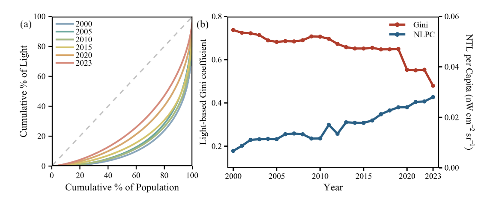
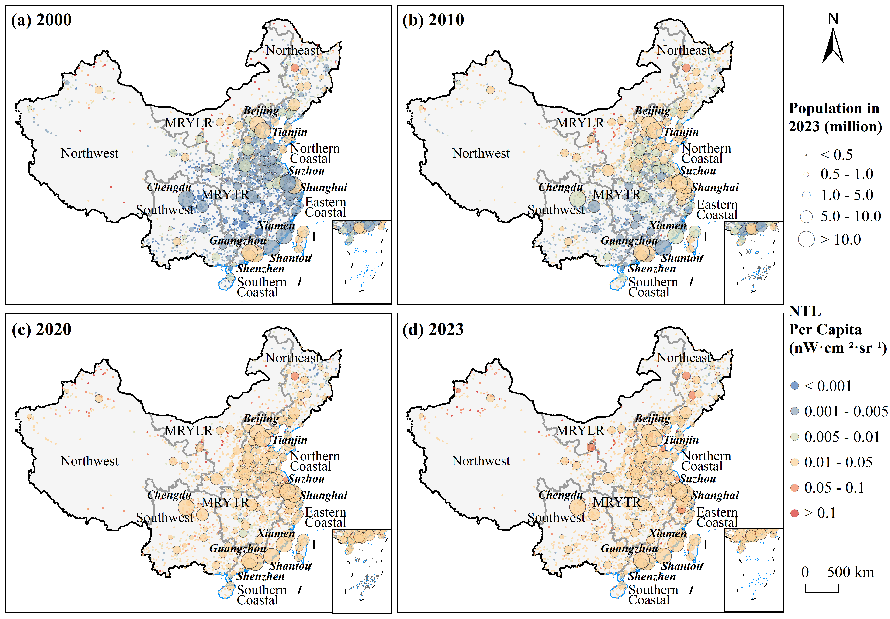
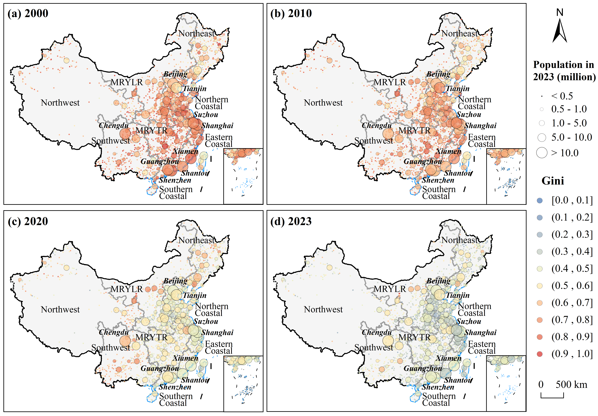

夜间灯光遥感因其优异的空间连续性和时间一致性，已成为衡量城市发展的有效指标。首先，夜间光度的变化间接反映了城市建设、经济活动和人口聚集情况。其次，夜间光度数据有助于对功能性城市区域进行一致的量化，即使在边界不清、数据缺失或行政区划模糊的区域也是如此。

此研究在R中将夜间灯光遥感数据和人口栅格数据进行空间聚合使得二者具有同样的空间分布规律后，进行了人均夜间灯光的计算和夜间灯光基尼系数的计算(如下所示)

得到国家尺度的人均夜间灯光和夜间灯光基尼系数随时间的变化趋势

以及城市尺度的人均夜间灯光和夜间灯光基尼系数的时空变化趋势

